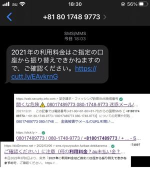
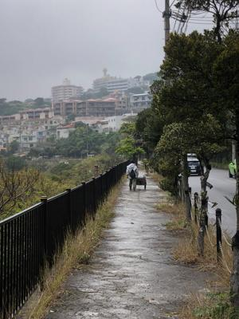

うるがいの話 ある日
最新: 雨の日【うるがいの話 ある日】とは 一日だけのプログです
『うるがいの話』の最新一日だけのプログで、通信料が少なく経済的だ。カニの画像をクリックすると全ての日付が載る『うるがいの話』サイトを表示します
|
|
【うるがいの話】 うるがい(ｳﾙｶﾞｲ urugai)とは、『もずくがに』の名前でとても大きくなります。 |
|---|---|
|
|
【カミマヤーの話】 猫のことを方言でマヤーといいます。カミマヤー（kamimayaa）とは、神の猫のことです。 |
|
【たながぁの音楽】 たながぁ（ﾀﾅｶﾞｰtanagaa）とは手長えびのことで、何種類かあり大きいのは車 エビぐらいになります。 |

|
【ぶながぁの話】 ぶながー(bunagaa)とは、赤い髪の毛、赤い身体、そして身長は１ｍ２０ｃｍ ぐらい、川の蟹を食べているの目撃された。場所は沖縄県国頭郡大宜味村のと ある村僕の隣近所に住んでいる爺さんから、聞いた話です。 |
|
|
【ギーマの話】 ギーマ(giima)とは、山原の里山に咲くスズランに似た、 花を付けます。実は食べられます、 気が付くと口の周りが紫になっています。 |
2022年03月07日 (月）雨の日
16:18

１１時過ぎから、雨が降る始める。写真は先週水曜日の雨のなか撮ったもので
ある。リヤカーを引く、女の人。たまに見かけるいつもリヤカーを引いて、リ
ヤカーの中にはたまに塵があるが、この日通り過ぎたときに中を覗くと空だっ
た。世俗からかけ離れた空間にいるような人々である（こういう人達をよく見
かける）。

連日ウクライナの映像が流れている、昨日は一人ポツネンと泣きながら歩く男
の子をみる（マゴとかぶってしまう）、こんなことが今の時代に起きていると
は。Ⅾ✕人材研修のとんでもない課題『ゼロベース思考を習得するメリットと
それを習得するために必要と思われることをレポートしてください。（４００
文字以上）』、なんとか仕上げる、ウクライナの悲劇に比べてたらなんともな
いサーと点数の取れない回答をする。そして昨日提出した動画研修の回答が返
ってきた、おぇ！、やはり雑になっている
おつかれさまです、確認しました。
・映像の切り替わりタイミングがサンプルとは異なっている。
・最後のロゴは白バックでお願いします（いまは黒バックになっています）
上記2点について修正をお願いできますか？
この回答のメールの次に、最後の動画研修案内メールが届く、ハードル高い。
昨日スマホに詐欺・フィッシングメールのＳＭＳも届いていた。雨の日・・・
１６時０６分 ビットコインの総資産 ￥１２、７２６↓